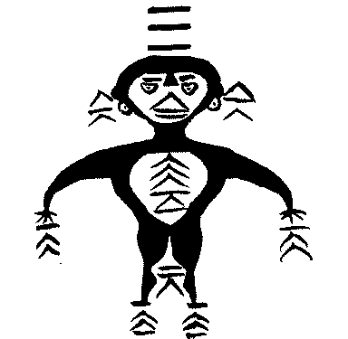

相關文章（如何學八卦系列）：
說卦傳全文註解（上）
昔者聖人之作易也，幽贊於神明而生蓍，參天兩地而倚數，觀變於陰陽而立卦，發揮於剛柔而生爻。和順於道德而理於義，窮理盡性以至於命。
【翻譯】古代的聖人是這麼創作《易經》的，在幽隱而常人所無法看到之處彰顯神明而生出蓍草，天數為三而地數為兩，依靠這樣的數字關係，用心在陰陽之中觀察變化而設立了卦象，發揮剛與柔的原理而產生了爻。順應於道德並就著義理來治理，窮盡道理而盡天性，最終一直通達到天命。
【釋義】朱熹《周易本義》將此段分為《說卦傳》第一章，下段為第二章。：「此一節將明聖人引伸因重之意，故先敘聖人本制蓍數卦爻，備明天道人事妙極之理。」
一、二兩章都在說明古代「聖人」如何發明與設計易經卦象與六爻，其靈感起源於三才與天地陰陽之道，以天道通人事。
這兩章文字文風和說理方式較接近《繫辭傳》，與《說卦傳》其餘文字旨在講八卦卦象有些格格不入。因此可能漢儒整理編纂時誤植所致。《繫辭傳》：「八卦成列，象在其中矣。因而重之，爻在其中矣。剛柔相推，變在其中矣。繫辭焉而命之，動在其中矣。」與此章同樣都在講卦爻的構成。
第一、二章所言內容前後呼應，談的都是三才之道如何構成六爻。此章「參天兩地」即下章的「兼三才而兩之」。「觀變於陰陽而立卦」即後段「立天之道曰陰與陽」，「發揮於剛柔而生爻」即「立地之道曰柔與剛」，「和順於道德而理於義」即「立人之道曰仁與義」，「窮理盡性以至於命」則是下段開頭所說的「將以順性命之理」。
【字義】
昔者聖人之作易也：傳統看法認為此處的「聖人」指的是伏羲，伏羲為傳說中最早畫八卦者，有些看法認為伏羲也是最早畫六十四卦者。孔穎達：「聰明叡知，謂之聖人。此聖人即伏犧也，不言伏犧而云聖人者，明以聖知而制作也。且《下繫》已云『包犧氏之王天下也，於是始作八卦』，今言作易，明是伏犧，非文王等。」所謂的「作」，是創作、發明的意思。孔穎達：「凡言作者，皆本其事之所由，故云昔者聖人之作易也。」
幽贊神明：幽為幽隱、幽深、隱蔽。贊為見，或明，或佐、助。幽贊神明，以幽深的方式佐助神明。贊或作讚，《釋文》：「本或作讚。」《說文》：「幽，隱也。」「贊，見也。」段玉裁注：「疑當作所以見也，謂彼此相見必資贊者。《士冠禮》贊冠者、《士昏禮》贊者注皆曰：贊，佐也。《周禮》大宰注曰：贊，助也。是則凡行禮必有贊，非獨相見也。」韓康伯：「幽，深也。贊，明也。蓍受命如響，不知所以然而然也。」孔穎達：「幽者，隱而難見，故訓為深也。贊者，佐而助成，而令微者得著，故訓為明也。」朱熹：「幽贊神明，猶言贊化育。」荀爽：「幽，隱也。贊，見也。神者在天，明者在地。神以夜光，明以晝照。」干寶：「幽昧，人所未見也。贊，求也。言伏羲用明於昧冥之中，以求萬物之性，爾乃得自然之神物，能通天地之精，而管御百靈者。始為天下生用蓍之法者也。」
蓍：蓍草，蓍草所做的籌策。古代算卦必定揲蓍（音蛇師），以蓍草來演算得到的數字來畫卦。蓍草為菊科多年生水生植物，傳說有神靈，因此以蓍算卦。《說文》：「蒿屬，生十歲，百莖。《易》以為。天子蓍九尺，諸侯七尺，大夫五尺，士三尺。」段玉裁注：「蒿屬：謂似蒿而非蒿也。陸機曰：似藾蕭，靑色，生千歲三百莖。《艸木疏》、《博物志》說皆同。《尙書大傳》曰：蓍之爲言耆也，百年一本生百莖。易為數：數，筭也。謂占易者必以是計筭也。詳易辭。天子蓍九尺，諸侯七尺，大夫五尺，士三尺：此禮三正記文也，亦見白虎通。」荀爽曰：「蓍者，策也。謂陽爻之策三十有六，陰爻之策二十有四，二篇之策萬有一千五百二十。上配列宿，下副物數。生蓍者，謂蓍從爻中生也。」
參天兩地而倚數：即後文所說的「兼三才而兩之」。三天，三才類天，三為奇，奇為陽。兩地，兩為偶，偶為陰數，故以地道類之。兩亦可象徵陰陽兩儀。韓康伯：「參，奇也。兩，耦也。七、九陽數，六、八陰數。」 虞翻：「倚，立。參，三也。謂分天象為三才，以地兩之，立六畫之數，故倚數也。」
馬融王肅曰：五位相合以陰從陽，天得三合謂一三與五也，地得兩合謂二與四也。
鄭玄：天地之數備於十，乃三之以天，兩之以地，而倚託大衍之數五十也。必三之以天，兩之以地者，天三覆，地二載，欲極於數，庶得吉凶之審也。
孔穎達：先儒馬融、王肅等解此，皆依《繫辭》云：「天數五，地數五，五位相得而各有合」，以為五位相合，以陰從陽。天得三合，謂一、三與五也；地得兩合，謂二與四也。鄭玄亦云天地之數備於十，乃三之以天，兩之以地，而倚託大演之數五十也。必三之以天，兩之以地者，天三覆，地二載，欲極於數，庶得吉凶之審也。…何以參兩為目奇耦者？蓋古之奇耦，亦以三兩言之。且以兩是耦數之始，三是奇數之初故也。不以一目奇者，張氏云：以三中含兩，有一以包兩之義，明天有包地之德，陽有包陰之道，故天舉其多，地言其少也。
觀變於陰陽：依《釋文》，或作「觀變化於陰陽」。
昔者聖人之作易也，將以順性命之理，是以立天之道曰陰與陽，立地之道曰柔與剛，立人之道曰仁與義，兼三才而兩之，故易六畫而成卦。分陰分陽，迭用柔剛，故易六位而成章。
【翻譯】古代的聖人是這麼創作《易經》的，為了要治理性命的道理，所以建立了天道的象徵符號，稱為陰和陽。建立了象徵地道的概念，稱它柔與剛。建立了象徵人道的常理，稱它為仁與義。天地人三才都有這樣的對偶象徵，所以易經要有六畫才會成為一個卦。天道分化出陰又分化出陽，反覆在地道的柔與剛之間變化運用，所以易卦的六爻位置就有了一種架構之美。
【釋義】此段《本義》分為第二章。其實是第一章的另一種詮釋法，兩段闡述的都是易卦為何有六爻，但此章顯然講的比前章更具體而生動。易卦的創作靈感，來自於天地人三才，天地人都有它的陰陽，所以就成為六爻。這陰陽在地則稱它柔與剛，在人則落實為仁與義，但都是天道陰陽的體現。
韓康伯：在天成象，在地成形。陰陽者言其氣，剛柔者言其形，變化始於氣象而後成形。萬物資始乎天，成形乎地，故天曰陰陽，地曰柔剛也。
【字義】
三才：即天、地、人。在三畫卦裡，上爻為天，下爻為地，中爻為人。在六畫卦的架構裡，初與二爻為地，三與四爻為人，五與上爻為天。三才在《繫辭傳》裡又稱「三材」或「三極」。
立地之道曰柔與剛：事實上柔與剛在《周易》中是比陰與陽為更常見的概念，特別是在《彖傳》和《象傳》裡，陰爻稱柔，陽爻稱剛。後來才演變為陰與陽的稱呼。
六位而成章：《釋文》：「本又作六畫。」
天地定位，山澤通氣，雷風相薄，水火不相射，八卦相錯，數往者順，知來者逆，是故易逆數也。
【翻譯】天在上，地在下，這是一定的位置關係。山與澤會通氣交流，雷與風會相互接近而彼此逼迫，水與火相互不發射。八卦相互交錯，依著數去推算就是順理，但是要知道未來則要逆向推理，所以易卦就是要逆著數理來推算。
【釋義】此為《說卦》第三章。依孔穎達，這段講的是單卦重為六十四卦，八卦相交錯而備擬天道人事：「此言六十四卦，非小成之八卦也。伏犧初畫八卦，以震象雷，以巽象風，以艮象山，以兌象澤。八卦未重，則雷風各異，山澤不通，於陰陽變化之理，未為周備，故此下云八卦相錯，數往者順，知來者逆。」「今八卦相錯，則天地人事莫不備矣。故云天地定位而合德，山澤異體而通氣，雷風各動而相薄，水火不相入而相資。」
自宋朝邵雍之後，以所謂的先天八卦方位圖來解釋此章。先天八卦又稱伏羲八卦，傳說是伏羲所畫，實則是邵雍輾轉得自陳摶的道家易圖式。邵雍：「此伏羲八卦之位。乾南，坤北，離東，坎西，兌居東南，震居東北，巽居西南，艮居西北。於是八卦相交而成六十四卦，所謂先天之學也。」這裡所謂的「伏羲八卦之位」、「先天之學」都是邵雍假託古聖王而言，所指的八卦方位順序也與此章文字無法對應。
此段文字長沙馬王堆出土的帛書易傳《易之義》作：「天地定立，○○○○，火水相射，雷風相榑，八卦相厝。數往者順，知來者逆，故易達數也。」相較之下，除了古今字的差異之外，與《說卦》此章有三大差別。一是雷風與水火的排序對調，《說卦》雷風在前，水火在後，帛書則反過來。其次，「水火不相射」帛書作「火水相射」，除了否定句變成肯定句之外，水火與火水的次序也不一樣。最後，「易逆數」帛書作「易達數」，相較之下帛本文義較通順。
此段所併舉的兩卦，都呈陰陽相反，所謂的「變對」或「錯」，如乾天與坤地，艮山與澤兌，震雷與巽風，坎水與離火。同時在行文上皆以陽卦在前，陰卦在後。而帛書的「火水」很可能是以火為坎，離為水，這樣的取象與清華簡一致。清華簡的八卦方位圖中即以勞（坎）在南方為火，羅（離）在北方為水。
以帛書來修改此章文字，八卦次序應當作：「天地定位，山澤通氣，水火相射，雷風相薄。」將卦象轉為八卦則是：乾坤，艮兌，坎離，震巽。該卦序與清華簡《筮法》的〈天干與卦〉以及《別卦》的八經卦卦序一致，帛書《周易》的卦序排法也是依此八卦次序，因此今本《說卦》傳文字應該有錯置，帛書為正確。
【字義】
天地定位：天尊地卑，在天成象，在地成形，即天地的定位。要注意的是，邵雍將天地定位作為先天八卦圖的上下定位，這已非本義。此處的天地定位純就天地之自然而言，與所謂的先天八卦方位無關。《繫辭傳》：「天尊地卑，乾坤定矣。卑高以陳，貴賤位矣。動靜有常，剛柔斷矣。方以類聚，物以群分，吉凶生矣。在天成象，在地成形，變化見矣。」
雷風相薄：薄，迫近。《孫氏周易集解》：「馬融鄭康成顧懽云：薄，入也。陸績曰：相薄，相附薄也。」
水火不相射：有二解。一是音亦，厭也。水火不相厭，水火不相壓迫。《釋文》：「虞陸董姚王肅：音亦。云：厭也。」二是音石，犯也。水火不相射，水火不相侵害、不相侵犯。朱熹：「射音石，射猶犯也，不相射是不相害之義。」
八卦相錯：錯原義為塗金，引申為交錯、錯雜。孔穎達認為這指的是重卦之交錯。
數往者順，知來者逆：筮者數也，周易屬於筮法，用的是數占。往為由近到遠，又有往昔、過去之義。以數而推過往之理為順，《說文》：「順，理也。」段注：「理者治玉也。」來為由遠到近，也有未來、將來之義。推已知過往之數，以知未來之事，此為逆。逆者迎也。邵雍以先天八卦方位圖來解釋：「乾南，坤北，離東，坎西，震東北，兌東南，巽西南，艮西北。自震至乾為順，自巽至坤為逆。」《繫辭》：「天生神物，聖人則之，无有遠近幽深，遂知來物。」
是故易逆數也：《周易》推過往之數而知未來之事，所推者數，因此說是「逆數」。「逆數」帛書作「達數」，通達數理。
雷以動之，風以散之，雨以潤之，日以烜之，艮以止之，兌以說之，乾以君之，坤以藏之。
【翻譯】震為雷，作用是震動萬物。巽為風，作用為渙散萬物。坎為水，表現為天象則是雨，雨的作用是濕潤萬物。離為日，作用是顯赫照亮萬物。艮為山，作用是停止、阻止。兌為澤，作用是取悅萬物。乾為天，統治萬物。坤為地，藏養萬物。
【釋義】《本義》分為第四章。闡釋八卦的作用。前四卦以自然取象取代卦名，雷即震，風即巽，雨為坎，日為離。後四卦則直言卦名。後儒對此多所發揮與解釋，《朱子語類》：「雷以動之以下四句，取象義多，故以象言。艮以止之以下四句，取卦義多，故以卦言。」
此章八卦順序與前章及後章都不一樣，邵子以前章為先天八卦，下一章為後天八卦。朱元昇因此推論此章為「中天八卦」，屬黃帝易，此說穿鑿附會，不可取。
前章依據帛書校正之後，其八卦卦序為：乾坤、艮兌、坎離，震巽。此章是依前章而反排：震巽、坎離、艮兌、乾坤。此外，清華簡《筮法》的〈地支與卦〉一節裡，乾坤不納地支，而其餘六卦的地支排序與此卦序相同：
震 巽 坎 離 艮 兌
子 丑 寅 卯 辰 巳
午 未 申 酉 戌 亥
陳夢雷：雷動風散，乾坤初爻相易為震巽也。雨潤日晅，中爻相易為坎離也。止之說之，終爻相易為艮兌也。此六子，生物之序也。然六子致用，主於乾而動，歸於坤而藏。此又父母之功也，故以乾坤終之。
【字義】
烜：音選。有多義，顯赫、明亮、曬乾、照亮。《釋文》作「暄」：「京云：乾也。本又作暅。」
說：說字為後出文字，從兌字增繁而來。兌與說都兼具說服、說話，與愉悅等義。傳統注解皆解釋為悅，實則說亦有說服之義。此處解釋為悅較佳。
乾以君之：郭京：「乾以居之，居誤作君。」
帝出乎震，齊乎巽，相見乎離，致役乎坤，說言乎兌，戰乎乾，勞乎坎，成言乎艮。
萬物出乎震，震，東方也。齊乎巽，巽，東南也。齊也者，言萬物之絜齊也。離也者，明也。萬物皆相見，南方之卦也。聖人南面而聽天下，嚮明而治，蓋取諸此也。坤也者，地也。萬物皆致養焉，故曰致役乎坤。兌，正秋也，萬物之所說也，故曰說言乎兌。戰乎乾，乾，西北之卦也，言陰陽相薄也。坎者，水也，正北方之卦也，勞卦也，萬物之所歸也，故曰勞乎坎。艮，東北之卦也，萬物之所成終而所成始也，故曰成言乎艮。
【翻譯】
帝王從震卦的方位出現，在巽卦的方位齋戒整潔身心，而在離卦的方位與眾人相見。在坤卦的方位致力於邊防之事。說服或取悅百姓之事則在兌卦，戰爭之事在乾卦。勞動人民或慰勞之事在坎卦，最後完成功業是在艮卦。
萬物從震位出來，震是東方的位置。在巽位整齊平等，巽是東南方。所謂的齊，是說萬物都很整齊。離就是明，萬物都在離卦的方位相互見面，離屬於南方的卦。聖人面向南方以聽天下。面向光明來治天下，取的是這樣的涵義。坤卦就是地，萬物都因大地而受到生養，所以說在坤位的地方致力於邊防。兌卦是正秋，萬物都喜悅的時候，所以喜悅就在兌卦之位。戰於乾位，乾是西北之卦，因為這是陰陽相互逼迫的位置。坎是水，正北方的卦，也是勞卦，萬物都歸於此，所以說在坎卦勞動。艮是東北方的卦，萬物都是在這裡而完成而開始，所以說完成於艮位。
【釋義】此第五章，邵雍定義為「後天八卦」，並宣稱是文王所畫：「此文王八卦，乃入用之位，後天之學也。」邵雍說的「入用之位」是正確的，但這個八卦圖的流傳比宣稱伏羲所畫的「先天八卦」還要古老，可能也不是文王所畫。
清華簡《筮法》有一個目前最古老的八卦方位圖，所載方位與此章很像，但差別在於離（羅）與坎（勞）與此相反。究其因，是因為當時離與坎兩卦的五行取象與今相反，以離為水，坎為火。由於此方位圖是依據五行生剋關係所分配，因此離與坎的位置相反，清華簡的卦位圖可視為此章方位配置的前身，而且顯然清華簡的卦位圖正處八卦與五行理論結合的發展初期，離坎的五行取象及土王四季等觀念都在《說卦傳》此章才發展成熟而得到最後確認。
這個方位圖在唐朝開始出現於一些器物上，例如在一些銅鏡的紋飾。至宋朝邵雍開始連同先天八卦圖一起推行於世。
此章所言，除了八卦的具體方位之外，也可對應到五行、時節，以及八卦的作用，兼及八卦所對應的不同人事作為。
「帝出乎震，齊乎巽，相見乎離，致役乎坤，說言乎兌，戰乎乾，勞乎坎，成言乎艮。」此段所言可視為八卦在人事上的不同作用，有別於前一章所言的自然現象中的作用。古代君王行事必需符合時節與方位，後天八卦圖象徵的既有空間上的方位，又有時間上的時節意義。不同的時位宜於不同的人事作為。震卦為出，巽為齊。齊可為整齊的齊，也通齋，齋戒身心之義。
「萬物出乎震，震，東方也」，本章首句言「帝出乎震」，緊接著又說「萬物出乎震」。震之於帝於萬物於百姓同為出。震是東方之卦，而在季節上則代表春天，具有萬物震奮而生長之義。因此豫卦上震下坤，《大象傳》說「雷出地奮」，坤地為眾為萬物，雷出地奮即震出而萬物並作。陳夢雷：「上言帝，此節言萬物之隨帝以出入。蓋帝之出入不可見，而為物者可見，故又以物言之，以見八卦流行生物之功也。」
孔穎達以帝為天帝，並以「斗柄」所指來解釋方位，例如震卦：「以震是東方之卦，斗柄指東為春，春時萬物出生也。」
清華簡《筮法》卦位圖震卦：「東方也，木也，青色。」「奚古胃之震，司靁，是古胃之震。」勞卦（坎）：「南方也，火也，赤色也。」「奚古胃之勞，司壴，是古胃之勞。」兌：「西方也，金也，白色。」「奚古胃之兌，司收，是古胃之兌。」羅卦（離）：「北方也，水也，黑色也。」「奚古胃之羅，司臧，是古胃之羅。」
此八卦方位，震兌離坎居於四個正方位，又稱「四正卦」，四正卦之名在清華簡《筮法》就已出現，第五節：「四正之刲見，乃至。」問來人當至否？四正之卦都出現了，那麼所問的來人將至。
乾坤巽艮在四個邊角，又稱「四隅卦」，或「四維卦」。
【字義】
出乎震：春天萬物出。出也可解釋為生，萬物生乎震。虞翻：「出，生也。震初不見東，故不稱東方卦也。」陳夢雷：「出者，發露之謂。震居東方，於時為春。三陽開泰，萬物從此發生，則帝即從此出矣。」
絜齊：整齊，平齊。鄭玄：「萬物出乎震，雷發聲以生之也。齊乎巽，風搖動以齊之也。潔，猶新也。」陳夢雷：「齊者，畢達之謂。」齊亦可假借為齋，齋戒，整齊。
役：《說文》：「戍邊也。」役為守衛邊防，通禦。傳統解釋以役為勞役，如孔穎達：「以坤是象地之卦，地能生養萬物，是有其勞役，故云致役乎坤。」
嚮：通「向」。嚮明，即向明，面向光明。
薄：音義同迫，近逼。
勞：有二義，一是辛勞、勞動、勤勞之義。二是慰勞。孔穎達：「水行不舍晝夜，所以為勞卦。又是正北方之卦，斗柄指北，於時為冬，冬時萬物閉藏，納受為勞，是坎為勞卦也。」陳夢雷：「勞，去聲，慰勞之意。」
說言乎兌：說有二義。通悅，也有說服、談說之義。言，語助辭。以下「成言乎艮」言字同。
成言乎艮：艮位於東北，於時節為冬季一年結束之時，古字冬即終，故艮有「終」之義。謙卦下體艮，卦辭及九三爻辭皆說「君子有終」。孔穎達：「艮是東北方之卦也。東北在寅丑之間，丑為前歲之末，寅為後歲之初，則是萬物之所成終而所成始也。」
神也者，妙萬物而為言者也。動萬物者莫疾乎雷，橈萬物者莫疾乎風，燥萬物者莫熯乎火，說萬物者莫說乎澤，潤萬物者莫潤乎水，終萬物始萬物者莫盛乎艮。故水火相逮，雷風不相悖，山澤通氣，然後能變化，既成萬物也。
【翻譯】八卦之所以為神，是就其神妙萬物而言。震動萬物的，沒有比雷還要急速的。擾動萬物的，沒有比風還要急速的。乾燥萬物的，沒有比火還更能夠乾燥的。取悅萬物的，沒有比水澤還更能取悅的。濕潤萬物的，沒有比水還能夠濕潤的。成就萬物而起始萬物的，沒有比艮卦還要隆盛的。所以水和火相互接近，而雷和風彼此不相擾亂，山與水澤則彼此互相通氣。只有這樣，才能夠有所變化，成就萬物。
【釋義】此第六章，與第四章「雷以動之，風以散之。雨以潤之，日以烜之。艮以止之，兌以說之」義理相同，但只談六子卦，少了乾坤。而且其卦序顯然與後天八卦圖是一致的。
清華簡《筮法》有〈四季吉凶〉一節，配合簡中的八卦方位圖來看之後會發現，震與巽同為春季，勞（坎）為夏季，兌為秋季，羅（離）與艮同屬冬季。但乾與坤未列四季。而在〈地支與卦〉一節裡，乾坤不納天干。從清華簡的內在理論結構清楚看出，乾與坤兩卦有特殊意義，而在一些應用上會與六子卦有所區別。此章只言六子，或許是當時有這樣的應用背景。
【字義】
動萬物者莫疾乎雷：春天雷出地奮，萬物並作。疾，急速。崔憬：「謂春分之時，雷動則草木滋生，蟄蟲發起，所動萬物，莫急於此也。」
妙萬物：《釋文》：「王肅作眇，音妙。董云：眇，成也。」
橈：擾也，擾動。
燥萬物者莫熯乎火：燥與熯義同，都是乾燥的意思。《說文》引作「燥萬物者莫暵于離」：「暵，乾也。耕曓田曰暵。从日堇聲。《易》曰：燥萬物者莫暵于離。呼旰切。」《釋文》：「王肅云：呼但反，火氣也。徐本作暵，音漢，云：熱暵也。《說文》同。」
水火相逮：逮，及也。《釋文》引作「水火不相逮」：「鄭宋陸王肅王廙無不字。」孔穎達：「上章言水火不相入，此言水火相逮者，既不相入，又不相及，則无成物之功，明性雖不相入而氣相逮及也。」朱震：「耳目通竅，水火相逮也。」
雷風不相悖：悖，違悖，擾亂。孔穎達：「上言雷風相薄，此言不相悖者，二象俱動，動若相薄，而相悖逆則相傷害，亦无成物之功，明雖相薄而不相逆也。」
乾健也，坤順也，震動也，巽入也，坎陷也，離麗也，艮止也，兌說也。
【翻譯】乾卦是強健、剛健。坤是柔順，順理。震是動作。巽是進入。坎是坑陷。離是附麗。艮是停止，兌是喜悅。
【釋義】此第七章所言為八卦之德性，俞琰：「此八卦之德也，凡天下萬事萬物之性情，包括无有遺者。」「先儒以此八字為八卦之訓詁，誠哉是言也。」朱熹定義為「性情」：「此言八卦之性情。」陳夢雷：「性情者其眞也。性者其本體，情者其作用也。」孔穎達則認為是名義：「此一節說八卦名訓。」
項安世以三男卦為乾父陽氣作用的三個階段，從震、坎、艮，分別為陽氣從動、陷，而止。巽、離、兌則是陰氣的入、麗，而悅：「健者始於動而終於止，順者始於入而終於說。陽之動，志於得所止，陰之入，志於得所說。」
【字義】
乾健也：乾古卦名有時稱健，因為三畫皆陽，陽為剛，因此乾卦是最為剛健者。《說文》：「乾上出也，从乙，乙，物之達也，倝聲。」段玉裁注：「此乾字之本義也。自有文字以後，乃用為卦名，而孔子釋之曰：健也。健之義生於上出，上出為乾，下注則爲溼，故乾與溼相對。俗別其音，古無是也。」乾本義為上出，後來與下注為濕相對而引申出乾濕的乾義。但自古就是作為易經的卦名，孔子解釋為健。孔穎達：「乾象天，天體運轉不息，故為健也。」俞琰：「乾三畫純乎陽剛，動而不息，故曰健。」
坤順也：坤在漢代時常作「川」或「巛」，像山川之地理，也可假借為順。順為治玉得法而有條理。《說文》：「順，理也。」段玉裁：「理者治玉也，玉得其治之方謂之理，凡物得其治之方皆謂之理。理之而後天理見焉，條理形焉。非謂空中有理，非謂性卽理也。…凡訓詁家曰從、順也。曰遜、順也。曰馴、順也，此六書之轉注。曰訓、順也，此六書之假借。凡順愼互用者，字之譌。」孔穎達：「坤象地，地順承於天，故為順也。」俞琰：「坤三畫純乎陰柔，靜而從陽，故曰順。」
震動也：《說文》：「震，劈歴，振物者。」震原義為霹靂，或雷霆，自古就認為，有振動萬物的意思。孔穎達：「震象雷，雷奮動萬物，故為動也。」俞琰：「震以一陽生於二陰之下，曰動。」
巽入也：風無孔而不入。又《雜卦傳》：「兌見而巽伏也。」巽亦有伏的意思。因伏而能入。孔穎達：「巽象風，風行无所不入，故為入也。」俞琰：「巽以一陰伏於二陽之下故曰入。」
坎陷也：《說文》：「坎，陷也。」陷即坑洞、陷阱。坎的甲骨文意思即祭祀坑，畫的是一個專門坑埋犧牲的大洞，因此解釋為陷。凡是坑洞、凹洞狀的地形或物體，都可取坎象。由坎陷的本義還可引申出地牢（監獄）、危險等卦象。孔穎達：「坎象水，水處險陷，故為陷也。」俞琰：「坎以一陽投於二陰之間，有陷溺之象，故曰陷。」
離麗也：麗為附著的意思，引申亦有美麗之義。孔穎達：「離象火，火必著於物，故為麗也。」俞琰：「離以一陰亞於二陽之間，有附麗之象，故曰麗。」
艮止也：孔穎達：「艮象山，山體靜止，故為止也。」俞琰：「艮之一陽窮極於二陰之上，故曰止。」
兌說也：兌即說及悅的本字，有說與悅二義。孔穎達：「兌象澤，澤潤萬物，故為說也。」俞琰：「兌之一陰發見於二陽之上，故曰說。」
乾為馬，坤為牛，震為龍，巽為雞，坎為豕，離為雉，艮為狗，兌為羊。
【釋義】此第八章，為動物類象。《說卦傳》以動物類象最為混亂，多數與經文不符。例如，乾為馬，但乾卦上下體都是乾，談的是龍，馬最多的是屯卦，屯卦上坎下震卻無龍也無豕。坤卦沒有牛而講馬。離卦卦辭說「畜牝牛吉」，《左傳》昭公五年莊叔為他兒子叔孫豹筮問一卦得明夷之謙，卜楚丘解釋說「純離為牛」。
【字義】
乾為馬：孔穎達：「乾象天，天行健，故為馬也。」
坤為牛：孔穎達：「坤象地，任重而順，故為牛也。」
震為龍：孔穎達：「震動象，龍動物，故為龍也。」
巽為雞：《九家易》：「應八風也。風應節而變，變不失時。雞時至而鳴，與風相應也。」孔穎達：「巽主號令，雞能知時，故為雞也。」
坎為豕：《九家易》：「污辱卑下也。」《釋文》：「京作彘。」孔穎達：「坎主水瀆，豕處污濕，故為豕也。」
離為雉：孔穎達：「離為文明，雉有文章，故為雉也。」
艮為狗：《九家易》：「艮止，主守禦也。」孔穎達：「艮為靜止，狗能善守，禁止外人，故為狗也。」俞琰：「外剛而內訓也。」
兌為羊：孔穎達：「兌，說也。王廙云：羊者，順從之畜，故為羊也。」
乾為首，坤為腹，震為足，巽為股，坎為耳，離為目，艮為手，兌為口。

【釋義】此第九章，為「近取諸身」，以身體為類象。清華簡《筮法》中有卦身圖（如圖），圖中所示的卦象，與此處大致吻合。差別在於坤卦畫在胸部，似乎以坤卦長得像胸肋骨。而離畫在腹部，此亦可能取的是《說卦傳》後文所言的「離為大腹」。而艮卦像手又像指，此《說卦》說的「艮為手」、「艮為指」。
證諸經文，《周易》在人身的取象上，多以六爻的位置來擬人身，少用八卦卦象。例如初爻為足，二爻為股，三爻為限，上爻為首。當中最大例證如艮卦和咸卦的爻辭。此外，艮卦卦辭說「艮其背」，又是以艮為背。
乾為首：頭在人身之上，最為尊貴，又為人一身之主宰。故前章說「乾以君之」。頭主思考，並可聯想到中樞神經系統，也可指的是事情之主幹，靈魂。孔穎達：「乾尊而在上，故為首也。」俞琰：「首者眾陽之所會，圓而在上。」
坤為腹：「坤以藏之」，腹藏臟腑，故以坤取象。坤又是最為柔軟之物，人身柔軟之部在腹。「宰相肚裡能撐船」，我們稱一個人很有包容力就說有「肚量」。坤又象徵包容。腹又可代表全身，乾是主宰與骨幹、靈魂，那麼坤就是人之軀體、血肉之軀。孔穎達：「坤能包藏含容，故為腹也。」俞琰：「腹者眾陰之所藏，虛而有容，故坤為腹。」
震為足：震為動，為行，主宰人之行動者為足。孔穎達：「足能動用，故為足也。」俞琰：「足主行，震之一陽動於下，有足之象，故為足。」
巽為股：股為大腿。從清華簡卦身圖來看，巽似乎指的是屁股（臀），因上厚實而下空虛，兩足承之。但通解以股為大腿，是隨足而動者，因此有謙遜而隨人之義。震與巽都有動的意思，震是陽氣的發動，是主動而剛健型的動。巽為陰氣的發動，是被動而柔軟型的動，因此分別以足和股來象徵。孔穎達：「股隨於足，則巽順之謂，故為股也。」俞琰：「脛本曰股，輔下體者也，巽之為股，未詳其義。」
坎為耳：耳內陷為陰，在人首之兩側，似卦象兩陰均布在陽之兩側。耳主聽，因此聽覺屬坎。耳對稱地倚附在主體上方，凡此類之物都可取象耳。孔穎達：「坎北方之卦，主聽，故為耳也。」又坎為流水，也是血，可引申為人的循環係統。
離為目：眼睛上下有眼瞼，象離卦上下二陽。離可再引申至視覺，聰明、智慧。眼睛為靈魂之窗，也可再引申至類似網目、窗、開窗等近似形態之物。孔穎達：「南方之卦，主視，故為目也。」
艮為手：艮是手，也是指（後章有「艮為手」），經文卦辭還可推理出艮為背。由手、指可再引申出行為，或者動手做的事都符合艮的卦象，例如經文中的「執」。也可從左右手引申出輔佐、輔助的意思。從背與山、止的概念，則可引申出依靠、靠山，休息等。孔穎達：「艮既為止，手亦能止持其物，故為手也。」在人身類象上，艮也常取象鼻。俞琰：「荀氏九家易又以艮為鼻，麻衣易亦以艮為鼻，其說云：艮為鼻，兌為口者，山澤通氣也。」《三國志》載，何晏問管輅：「連夢見青蠅數十頭，來在鼻上，驅之不肯去。」管輅回答：「鼻者艮，此天中之山。」
兌為口：兌字從古到今沒什麼變化，人上有一大口，口上兩道氣。口主言說，因此兌也是說。言說、說服人，一定要見面，面對面，因此兌為見（雜卦傳）。兌為乾首上一陰，陰為孔穴、缺口。首上有孔穴，即口之象。孔穎達：「兌，西方之卦，主言語，故為口也。」俞琰：「兌之陰畫上虛，故有口之象。」
乾，天也，故稱乎父。坤，地也，故稱乎母。震，一索而得男，故謂之長男。巽，一索而得女，故謂之長女。坎，再索而得男，故謂之中男。離，再索而得女，故謂之中女。艮，三索而得男，故謂之少男。兌，三索而得女，故謂之少女。
【翻譯】乾是天，所以稱為父親。坤是地，所以稱為母親。震卦，以坤為體，一次索求而得到男，因此稱為長男。巽以乾為體，一次索求而得到女，所以稱為長女。坎卦，再次索求而得男，所以稱為中男。離卦，再次索求而得女，所以稱中女。艮卦，三次索求而得男，因此稱少男。兌卦，三次索求而得女，所以稱少女。
【釋義】此第十章，以八卦擬人倫次序，乾坤為父母，生下三男三女，也就是所謂的「六子」。邵雍將其名為「後天八卦次序」，與後天八卦方位圖合為「後天之學」。後天八卦又名文王八卦，相傳為文王所作。
這是最為經典而古老的卦象之一。在清華簡《筮法》中，八卦的取象並沒有《說卦傳》豐富，許多《說卦傳》的取象都放在「爻象」裡，也就是占數的象，例如八為風，為水，為言，為飛鳥，為瘇脹，為魚；五象為天，為日，為貴人，為兵，為血，為車，為方，為憂懼。九為大獸，為木，為備戒，為首，為足，為蛇，為曲，為玦。四為地，為圓，為壴，為耳，為環，為腫，為雪，為露，為霰。
《筮法》在八卦的取象當中，只有諸如人身，方位，天干，地支，四季。最常用的卦象則是男女。雖然不明其六子的排列，但卦象中會將乾坤，震巽，坎離，艮兌做配對，配對的兩卦同時出現稱為相見，或同人之象，例如乾與坤相遇，震與巽相遇，坎與離相遇，艮與兌相遇。
【字義】
索：求也。《釋文》：「馬云：數也。王肅云：求也。」